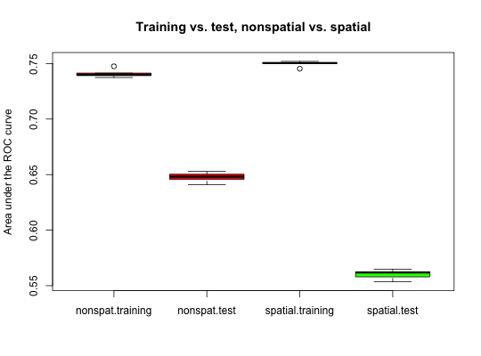

parsperrorest is a flexible interface for multiple types of
parallelized spatial and non-spatial cross-validation
and bootstrap error estimation and parallelized permutation-based
assessment of spatial variable importance.
parsperrorest(formula, data, coords = c("x", "y"), model.fun, model.args = list(), pred.fun = NULL, pred.args = list(), smp.fun = partition.loo, smp.args = list(), train.fun = NULL, train.param = NULL, test.fun = NULL, test.param = NULL, err.fun = err.default, error.fold = TRUE, error.rep = TRUE, err.train = TRUE, imp.variables = NULL, imp.permutations = 1000, importance = !is.null(imp.variables), distance = FALSE, do.gc = 1, do.try = FALSE, progress = 1, out.progress = "", notify = FALSE, par.args = list(), benchmark = FALSE, ...)
model.
Only simple formulas without interactions or nonlinear terms should
be used, e.g. y~x1+x2+x3 but not y~x1*x2+log(x3).
Formulas involving interaction and nonlinear terms may possibly work
for error estimation but not for variable importance assessment,
but should be used with caution.data.frame with predictor and response variables.
Training and test samples will be drawn from this data set by train.fun
and test.fun, respectively.data that
contain the x and y coordinates of sample locations.glm
or rpart. The function must accept at least two arguments, the first
one being a formula and the second a data.frame with the learning sample.model.fun
(in addition to the formula and data argument,
which are provided by sperrorest)model. Must accept at least two arguments: the fitted
object and a data.frame newdata with data
on which to predict the outcome.pred.fun (in addition to the
fitted model object and the newdata argument,
which are provided by sperrorest)data. E.g., partition.kmeans() for
spatial cross-validation using spatial k-means clustering.est.funresample.uniform() or resample.strat.uniform()resample.funtrain.fun but for the test set.test.fundata and the model predictions delivered
by pred.fun. E.g., err.default() (the default).
See example and details below.TRUE) if importance is
TRUE, otherwise FALSE): calculate error measures on each fold
within a resampling repetition.TRUE): calculate error measures
based on the pooled predictions of all folds within a resampling repetition.TRUE): calculate error measures on
the training set (in addition to the test set estimation).importance = TRUE)
Variables for which permutation-based variable importance assessment
is performed. If importance = TRUE and imp.variables is
NULL, all variables in formula will be used.importance = TRUE)
Number of permutations used for variable importance assessment.FALSE): if TRUE, calculate
mean nearest-neighbour distances from test samples to training samples using
add.distance.represampling()gc(); if <1, no garbage collection;
if >=1, run a gc() after each repetition;
if >=2, after each foldFALSE): if TRUE (untested!!),
use try() to robustify calls to model.fun and
err.fun; use with caution!1): Whether to show progress
information. For par.mode = 1, information about elapsed time, estimated time remaining and a
percentage indicator (0% - 100%) are shown.
progress = 2 only applies to par.mode = 2 and shows repetition
information only (instead of repetition and fold).
Set to FALSE for no progress information.par.mode = 2: Optionally write progress output to a file instead of console output.
The default ('') results in console output for Unix-systems and
file output ('parsperrorest.progress.txt') in the current working directory
for Windows-systems.parsperrorest() has finished.par.mode (the parallelization mode),
par.units (the number of parallel processing units),
par.libs (libraries to be loaded on cluster workers, character list).
See Details for more information.FALSE): if TRUE,
perform benchmarking and return sperrorestbenchmarks objectA list (object of class sperrorest) with (up to) six components:
Two par.mode options are availabe. The default mode is
par.mode = 1. Here, pbapply::pblapply() is used which
either calls parallel::mclapply() (on Unix-systems) or
parallel::parApply() (on Windows-systems). par.mode = 2
uses foreach::foreach(). While this approach is not as efficient,
it may work in cases in which par.mode = 1 fails.
par.libs only applies to par.mode = 1 on Windows-systems.
This parallelized version of sperrorest() may highly
decrease computation time. However, please note that problems
may occur depending on which function is used for cross-validation.
While the rpart::rpart() example (see Examples) here works fine, you may
encounter problems with other functions.
For par.mode = 2, you may encounter missing repetitions in the results
if repetitions finish to quickly. In this case, consider using
sperrorest()
Known problems when being parallized: randomForest::randomForest()
If you define a custom pred.fun which conists of multiple custom
defined child functions, make sure to define pred.fun and all child
functions in one call. Otherwise you will encounter errors in par.mode = 2
caused by how foreach loads the parent environment.
(1) Optionally save fitted models, training and test samples in the results object; (2) Optionally save intermediate results in some file, and enable the function to continue an interrupted sperrorest call where it was interrupted. (3) Optionally have sperrorest dump the result of each repetition into a file, and to skip repetitions for which a file already exists.
Brenning, A. 2012. Spatial cross-validation and bootstrap for the assessment of prediction rules in remote sensing: the R package 'sperrorest'. 2012 IEEE International Geoscience and Remote Sensing Symposium (IGARSS), 23-27 July 2012, p. 5372-5375.
Brenning, A. 2005. Spatial prediction models for landslide hazards: review, comparison and evaluation. Natural Hazards and Earth System Sciences, 5(6): 853-862.
Brenning, A., S. Long & P. Fieguth. Forthcoming. Detecting rock glacier flow structures using Gabor filters and IKONOS imagery. Submitted to Remote Sensing of Environment.
Russ, G. & A. Brenning. 2010a. Data mining in precision agriculture: Management of spatial information. In 13th International Conference on Information Processing and Management of Uncertainty, IPMU 2010; Dortmund; 28 June - 2 July 2010. Lecture Notes in Computer Science, 6178 LNAI: 350-359.
Russ, G. & A. Brenning. 2010b. Spatial variable importance assessment for yield prediction in Precision Agriculture. In Advances in Intelligent Data Analysis IX, Proceedings, 9th International Symposium, IDA 2010, Tucson, AZ, USA, 19-21 May 2010. Lecture Notes in Computer Science, 6065 LNCS: 184-195.
data(ecuador) # Muenchow et al. (2012), see ?ecuador fo <- slides ~ dem + slope + hcurv + vcurv + log.carea + cslope # Example of a classification tree fitted to this data: library(rpart) mypred.rpart <- function(object, newdata) predict(object, newdata)[, 2] ctrl <- rpart.control(cp = 0.005) # show the effects of overfitting fit <- rpart(fo, data = ecuador, control = ctrl) # Non-spatial 5-repeated 10-fold cross-validation: mypred.rpart <- function(object, newdata) predict(object, newdata)[,2] par.nsp.res <- parsperrorest(data = ecuador, formula = fo, model.fun = rpart, model.args = list(control = ctrl), pred.fun = mypred.rpart, progress = TRUE, smp.fun = partition.cv, smp.args = list(repetition = 1:5, nfold = 15), par.args = list(par.units = 2, par.mode = 1), error.rep = TRUE, error.fold = TRUE)#> |+++++++++++++++++ | 33% elapsed =05s, remaining ~10s |++++++++++++++++++++++++++++++++++ | 67% elapsed =09s, remaining ~05s |++++++++++++++++++++++++++++++++++++++++++++++++++| 100% elapsed =12s, remaining ~00ssummary(par.nsp.res$error.rep)#> mean sd median IQR #> train.auroc 7.410875e-01 0.003862250 7.399036e-01 0.002177564 #> train.error 2.994357e-01 0.003661315 2.998214e-01 0.002035714 #> train.accuracy 7.005643e-01 0.003661315 7.001786e-01 0.002035714 #> train.sensitivity 6.710571e-01 0.014473709 6.736429e-01 0.009000000 #> train.specificity 7.300714e-01 0.010551018 7.272857e-01 0.005071429 #> train.fpr70 3.141286e-01 0.013459823 3.130000e-01 0.013642857 #> train.fpr80 4.911571e-01 0.019435621 4.905000e-01 0.015071429 #> train.fpr90 6.865143e-01 0.017442135 6.918571e-01 0.031071429 #> train.tpr80 5.535571e-01 0.007410762 5.535714e-01 0.010714286 #> train.tpr90 3.246286e-01 0.007628224 3.252857e-01 0.006000000 #> train.tpr95 1.878571e-01 0.008143797 1.905000e-01 0.009000000 #> train.events 1.400000e+04 0.000000000 1.400000e+04 0.000000000 #> train.count 2.800000e+04 0.000000000 2.800000e+04 0.000000000 #> test.auroc 6.476167e-01 0.004606886 6.481540e-01 0.004566500 #> test.error 3.766000e-01 0.003029026 3.765000e-01 0.002500000 #> test.accuracy 6.234000e-01 0.003029026 6.235000e-01 0.002500000 #> test.sensitivity 5.924000e-01 0.011928956 5.940000e-01 0.006000000 #> test.specificity 6.544000e-01 0.015043271 6.550000e-01 0.020000000 #> test.fpr70 5.048000e-01 0.021970435 4.940000e-01 0.031000000 #> test.fpr80 6.324000e-01 0.014621901 6.330000e-01 0.016000000 #> test.fpr90 7.988000e-01 0.015959323 8.000000e-01 0.001000000 #> test.tpr80 4.142000e-01 0.007463243 4.130000e-01 0.003000000 #> test.tpr90 1.840000e-01 0.016673332 1.930000e-01 0.019000000 #> test.tpr95 9.840000e-02 0.007092249 1.000000e-01 0.013000000 #> test.events 1.000000e+03 0.000000000 1.000000e+03 0.000000000 #> test.count 2.000000e+03 0.000000000 2.000000e+03 0.000000000summary(par.nsp.res$error.fold)#> mean sd median IQR #> train.auroc 0.73524357 0.02236125 0.74203767 0.02745061 #> train.error 0.29943593 0.01640904 0.29528403 0.02143049 #> train.accuracy 0.70056407 0.01640904 0.70471597 0.02143049 #> train.sensitivity 0.67098691 0.05465183 0.67773019 0.07410212 #> train.specificity 0.73005250 0.03653538 0.72540541 0.04369640 #> train.fpr70 0.47350031 0.21604559 0.37473002 0.27585023 #> train.fpr80 0.62166540 0.15053977 0.59913793 0.25329279 #> train.fpr90 0.75407281 0.08245299 0.73650794 0.13372788 #> train.tpr80 0.50500074 0.06071390 0.51502146 0.08620790 #> train.tpr90 0.14929488 0.10720025 0.11158342 0.12926901 #> train.tpr95 0.09765495 0.05368679 0.09324759 0.08147455 #> train.events 933.33333333 5.44588447 934.00000000 8.00000000 #> train.count 1866.66666667 0.47457900 1867.00000000 1.00000000 #> test.auroc 0.64606504 0.04442818 0.64564007 0.04853172 #> test.error 0.37659896 0.03865435 0.37593985 0.04626305 #> test.accuracy 0.62340104 0.03865435 0.62406015 0.04626305 #> test.sensitivity 0.59287726 0.07759705 0.57812500 0.10735931 #> test.specificity 0.65488138 0.07683303 0.66666667 0.10652459 #> test.fpr70 0.63187646 0.18151324 0.60759494 0.32247710 #> test.fpr80 0.74771412 0.12874986 0.75000000 0.17602085 #> test.fpr90 0.84739378 0.08995144 0.86486486 0.12661776 #> test.tpr80 0.33125520 0.14187780 0.37096774 0.16985369 #> test.tpr90 0.11644909 0.09772018 0.08620690 0.09575636 #> test.tpr95 0.05877681 0.03876634 0.05357143 0.05418530 #> test.events 66.66666667 5.44588447 66.00000000 8.00000000 #> test.count 133.33333333 0.47457900 133.00000000 1.00000000 #> distance -1.00000000 0.00000000 -1.00000000 0.00000000summary(par.nsp.res$represampling)#> $`1` #> n.train n.test #> 1 1866 134 #> 2 1867 133 #> 3 1867 133 #> 4 1867 133 #> 5 1866 134 #> 6 1867 133 #> 7 1867 133 #> 8 1867 133 #> 9 1866 134 #> 10 1867 133 #> 11 1866 134 #> 12 1866 134 #> 13 1867 133 #> 14 1867 133 #> 15 1867 133 #> #> $`2` #> n.train n.test #> 1 1867 133 #> 2 1866 134 #> 3 1867 133 #> 4 1867 133 #> 5 1867 133 #> 6 1867 133 #> 7 1867 133 #> 8 1867 133 #> 9 1867 133 #> 10 1867 133 #> 11 1866 134 #> 12 1867 133 #> 13 1866 134 #> 14 1866 134 #> 15 1866 134 #> #> $`3` #> n.train n.test #> 1 1866 134 #> 2 1867 133 #> 3 1866 134 #> 4 1867 133 #> 5 1867 133 #> 6 1866 134 #> 7 1867 133 #> 8 1866 134 #> 9 1867 133 #> 10 1866 134 #> 11 1867 133 #> 12 1867 133 #> 13 1867 133 #> 14 1867 133 #> 15 1867 133 #> #> $`4` #> n.train n.test #> 1 1866 134 #> 2 1866 134 #> 3 1867 133 #> 4 1867 133 #> 5 1867 133 #> 6 1866 134 #> 7 1867 133 #> 8 1866 134 #> 9 1867 133 #> 10 1867 133 #> 11 1867 133 #> 12 1867 133 #> 13 1867 133 #> 14 1866 134 #> 15 1867 133 #> #> $`5` #> n.train n.test #> 1 1867 133 #> 2 1867 133 #> 3 1867 133 #> 4 1866 134 #> 5 1866 134 #> 6 1867 133 #> 7 1866 134 #> 8 1867 133 #> 9 1866 134 #> 10 1867 133 #> 11 1866 134 #> 12 1867 133 #> 13 1867 133 #> 14 1867 133 #> 15 1867 133 #># plot(par.nsp.res$represampling, ecuador) # Spatial 5-repeated 10-fold spatial cross-validation: par.sp.res <- parsperrorest(data = ecuador, formula = fo, model.fun = rpart, model.args = list(control = ctrl), pred.fun = mypred.rpart, progress = TRUE, smp.fun = partition.kmeans, smp.args = list(repetition = 1:5, nfold = 15), par.args = list(par.units = 2, par.mode = 2), error.rep = TRUE, error.fold = TRUE)#> Sun Feb 19 21:31:03 2017 Done.summary(par.sp.res$error.rep)#> mean sd median IQR #> train.auroc 7.496999e-01 0.002542707 7.504402e-01 0.0007962092 #> train.error 2.956643e-01 0.001722932 2.948214e-01 0.0005357143 #> train.accuracy 7.043357e-01 0.001722932 7.051786e-01 0.0005357143 #> train.sensitivity 6.786429e-01 0.008807030 6.782143e-01 0.0099285714 #> train.specificity 7.300286e-01 0.009079664 7.290000e-01 0.0142857143 #> train.fpr70 3.081429e-01 0.006468724 3.080000e-01 0.0076428571 #> train.fpr80 4.741714e-01 0.009624268 4.717857e-01 0.0114285714 #> train.fpr90 6.613286e-01 0.006475149 6.622857e-01 0.0051428571 #> train.tpr80 5.578714e-01 0.011158117 5.556429e-01 0.0123571429 #> train.tpr90 3.558000e-01 0.004643242 3.572143e-01 0.0009285714 #> train.tpr95 1.464143e-01 0.049086357 1.662857e-01 0.0790000000 #> train.events 1.400000e+04 0.000000000 1.400000e+04 0.0000000000 #> train.count 2.800000e+04 0.000000000 2.800000e+04 0.0000000000 #> test.auroc 5.601145e-01 0.004464785 5.619010e-01 0.0044570000 #> test.error 4.482000e-01 0.006496153 4.455000e-01 0.0065000000 #> test.accuracy 5.518000e-01 0.006496153 5.545000e-01 0.0065000000 #> test.sensitivity 5.056000e-01 0.010549882 5.050000e-01 0.0100000000 #> test.specificity 5.980000e-01 0.015443445 6.040000e-01 0.0170000000 #> test.fpr70 6.480000e-01 0.009797959 6.470000e-01 0.0070000000 #> test.fpr80 7.654000e-01 0.014328294 7.700000e-01 0.0140000000 #> test.fpr90 8.906000e-01 0.011970798 8.890000e-01 0.0090000000 #> test.tpr80 2.606000e-01 0.028562213 2.600000e-01 0.0270000000 #> test.tpr90 1.164000e-01 0.046548899 1.190000e-01 0.0830000000 #> test.tpr95 6.160000e-02 0.016801786 6.100000e-02 0.0090000000 #> test.events 1.000000e+03 0.000000000 1.000000e+03 0.0000000000 #> test.count 2.000000e+03 0.000000000 2.000000e+03 0.0000000000summary(par.sp.res$error.fold)#> mean sd median IQR #> train.auroc 0.74385225 0.02391961 0.74961076 0.04065904 #> train.error 0.29569528 0.01862702 0.29027113 0.03143194 #> train.accuracy 0.70430472 0.01862702 0.70972887 0.03143194 #> train.sensitivity 0.67805133 0.06154342 0.68861024 0.09969122 #> train.specificity 0.72985327 0.04029980 0.73178458 0.04013168 #> train.fpr70 0.43350026 0.19294804 0.34537726 0.20144202 #> train.fpr80 0.55884701 0.14078768 0.52339499 0.14824653 #> train.fpr90 0.76403607 0.09410692 0.77152318 0.16957930 #> train.tpr80 0.51288208 0.06626049 0.52312775 0.10237824 #> train.tpr90 0.28205862 0.10411569 0.32683983 0.12513468 #> train.tpr95 0.07781421 0.04498173 0.06152242 0.05697041 #> train.events 933.33333333 25.17470488 934.00000000 31.50000000 #> train.count 1866.66666667 26.80325380 1868.00000000 32.00000000 #> test.auroc 0.54348405 0.06948049 0.54044118 0.10417840 #> test.error 0.44846996 0.07615030 0.46236559 0.11204014 #> test.accuracy 0.55153004 0.07615030 0.53763441 0.11204014 #> test.sensitivity 0.48388989 0.26516235 0.44186047 0.31264545 #> test.specificity 0.58768195 0.19391887 0.61016949 0.26278519 #> test.fpr70 0.75872579 0.15471891 0.76056338 0.20947264 #> test.fpr80 0.83689699 0.11995890 0.84507042 0.20983943 #> test.fpr90 0.90951376 0.09020068 0.94736842 0.12976221 #> test.tpr80 0.11867267 0.12223320 0.10000000 0.14957112 #> test.tpr90 0.03325227 0.04671940 0.01587302 0.05063291 #> test.tpr95 0.02074698 0.03227142 0.00000000 0.02312216 #> test.events 66.66666667 25.17470488 66.00000000 31.50000000 #> test.count 133.33333333 26.80325380 132.00000000 32.00000000 #> distance -1.00000000 0.00000000 -1.00000000 0.00000000summary(par.sp.res$represampling)#> $`1` #> n.train n.test #> 1 1876 124 #> 2 1865 135 #> 3 1898 102 #> 4 1833 167 #> 5 1870 130 #> 6 1883 117 #> 7 1875 125 #> 8 1884 116 #> 9 1885 115 #> 10 1857 143 #> 11 1849 151 #> 12 1839 161 #> 13 1867 133 #> 14 1847 153 #> 15 1872 128 #> #> $`2` #> n.train n.test #> 1 1819 181 #> 2 1861 139 #> 3 1841 159 #> 4 1874 126 #> 5 1899 101 #> 6 1916 84 #> 7 1881 119 #> 8 1863 137 #> 9 1914 86 #> 10 1850 150 #> 11 1862 138 #> 12 1856 144 #> 13 1879 121 #> 14 1838 162 #> 15 1847 153 #> #> $`3` #> n.train n.test #> 1 1863 137 #> 2 1856 144 #> 3 1872 128 #> 4 1923 77 #> 5 1893 107 #> 6 1877 123 #> 7 1868 132 #> 8 1882 118 #> 9 1868 132 #> 10 1893 107 #> 11 1854 146 #> 12 1856 144 #> 13 1791 209 #> 14 1848 152 #> 15 1856 144 #> #> $`4` #> n.train n.test #> 1 1876 124 #> 2 1859 141 #> 3 1866 134 #> 4 1837 163 #> 5 1881 119 #> 6 1807 193 #> 7 1878 122 #> 8 1899 101 #> 9 1847 153 #> 10 1851 149 #> 11 1858 142 #> 12 1921 79 #> 13 1872 128 #> 14 1855 145 #> 15 1893 107 #> #> $`5` #> n.train n.test #> 1 1814 186 #> 2 1835 165 #> 3 1811 189 #> 4 1869 131 #> 5 1833 167 #> 6 1852 148 #> 7 1910 90 #> 8 1887 113 #> 9 1840 160 #> 10 1882 118 #> 11 1888 112 #> 12 1890 110 #> 13 1880 120 #> 14 1896 104 #> 15 1913 87 #># plot(par.sp.res$represampling, ecuador) smry <- data.frame( nonspat.training = unlist(summary(par.nsp.res$error.rep, level = 1)$train.auroc), nonspat.test = unlist(summary(par.nsp.res$error.rep, level = 1)$test.auroc), spatial.training = unlist(summary(par.sp.res$error.rep, level = 1)$train.auroc), spatial.test = unlist(summary(par.sp.res$error.rep, level = 1)$test.auroc)) boxplot(smry, col = c('red','red','red','green'), main = 'Training vs. test, nonspatial vs. spatial', ylab = 'Area under the ROC curve')